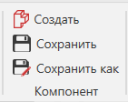

Создание нового компонента |
|
Новый компонент создается в начале координат 3D-мира. В большинстве случаев вы должны добавить хотя бы один элемент к компоненту после его создания. 1.На вкладке Моделирование, в группе Компонент, нажмите Создать.  2.(Необязательно) В группе Геометрия, нажмите кнопку Элементы, а затем в разделе меню Другой, нажмите Система координат. Это создает визуальную точку отсчета для начала координат компонента. |